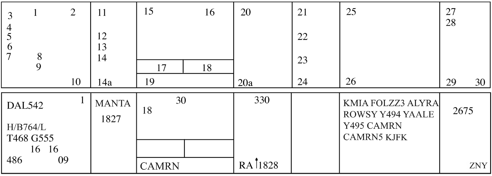
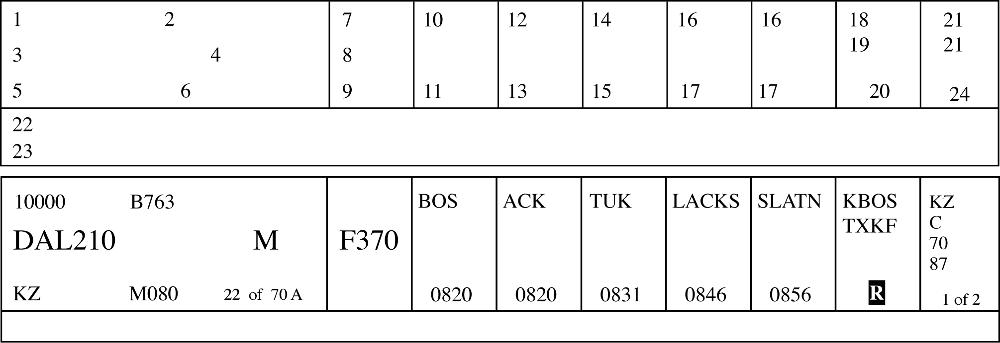
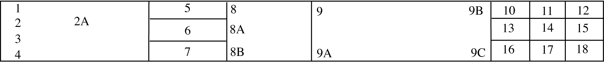
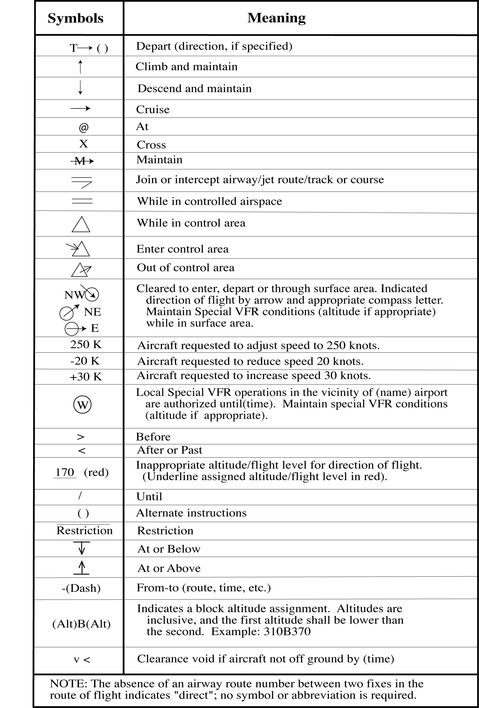
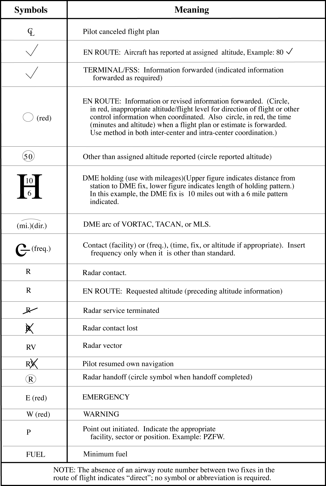

Chapter 2. General Control
Section 3. Flight Progress Strips
2-3-1. GENERAL
Unless otherwise authorized in a facility directive, use flight progress strips to post current data on air traffic and clearances required for control and other air traffic control services. To prevent misinterpretation when data is hand printed, use standard hand‐printed characters.
En route: Flight progress strips must be posted.
- Maintain only necessary current data and remove the strips from the flight progress boards when no longer required for control purposes. To correct, update, or preplan information:
- Do not erase or overwrite any item. Use an “X” to delete a climb/descend and maintain arrow, an at or above/below symbol, a cruise symbol, and unwanted altitude information. Write the new altitude information immediately adjacent to it and within the same space.
- Do not draw a horizontal line through an altitude being vacated until after the aircraft has reported or is observed (valid Mode C) leaving the altitude.
- Preplanning may be accomplished in red pencil.
- Manually prepared strips must conform to the format of machine‐generated strips and manual strip preparation procedures will be modified simultaneously with the operational implementation of changes in the machine‐generated format. (See FIG 2-3-1.)
- Altitude information may be written in thousands of feet provided the procedure is authorized by the facility manager, and is defined in a facility directive, i.e., 5,000 feet as 5, and 2,800 as 2.8.
FIG 2-3-1Standard Recording of Hand‐printed Characters
2-3-2. EN ROUTE DATA ENTRIES

- Information recorded on the flight progress strips (FAA Forms 7230-19) must be entered in the correspondingly numbered spaces:
TBL 2-3-1 Block
Information Recorded
1.
Verification symbol if required.
2.
Revision number.
DSR-Not used.3.
Aircraft identification.
4.
Number of aircraft if more than one, heavy aircraft indicator “H/” if appropriate, type of aircraft, and aircraft equipment suffix.
5.
Filed true airspeed.
6.
Sector number.
7.
Computer identification number if required.
8.
Estimated ground speed.
9.
Revised ground speed or strip request (SR) originator.
10.
Strip number.
DSR- Strip number/Revision number.11.
Previous fix.
12.
Estimated time over previous fix.
13.
Revised estimated time over previous fix.
14.
Actual time over previous fix, or actual departure time entered on first fix posting after departure.
14a.
Plus time expressed in minutes from the previous fix to the posted fix.
15.
Center‐estimated time over fix (in hours and minutes), or clearance information for departing aircraft.
16.
Arrows to indicate if aircraft is departing (↑) or arriving (↓).
17.
Pilot‐estimated time over fix.
18.
Actual time over fix, time leaving holding fix, arrival time at nonapproach control airport, or symbol indicating cancellation of IFR flight plan for arriving aircraft, or departure time (actual or assumed).
19.
Fix. For departing aircraft, add proposed departure time.
20.
Altitude information (in hundreds of feet) or as noted below.
NOTE-
Altitude information may be written in thousands of feet provided the procedure is authorized by the facility manager, and is defined in a facility directive, i.e., FL 330 as 33, 5,000 feet as 5, and 2,800 as 2.8.
20a.
OPTIONAL USE, when voice recorders are operational;
REQUIRED USE, when the voice recorders are not operating and strips are being use at the facility. This space is used to record reported RA events. The letters RA followed by a climb or descent arrow (if the climb or descent action is reported) and the time (hhmm) the event is reported.21.
Next posted fix or coordination fix.
22.
Pilot's estimated time over next fix.
23.
Arrows to indicate north (↑), south (↓), east (→), or west (←) direction of flight if required.
24.
Requested altitude.
NOTE-
Altitude information may be written in thousands of feet provided the procedure is authorized by the facility manager, and is defined in a facility directive, i.e., FL 330 as 33, 5,000 feet as 5, and 2,800 as 2.8
25.
Point of origin, route as required for control and data relay, and destination.
26.
Pertinent remarks, minimum fuel, point out/radar vector/speed adjustment information or sector/position number (when applicable in accordance with paragraph 2-2-1, Recording Information), or NRP.
27.
Mode 3/A beacon code if applicable.
28.
Miscellaneous control data (expected further clearance time, time cleared for approach, etc.).
29-30.
Transfer of control data and coordination indicators.
- Latitude/longitude coordinates may be used to define waypoints and may be substituted for nonadapted NAVAIDs in space 25 of domestic en route flight progress strips provided it is necessary to accommodate a random RNAV or GNSS route request.
- Facility air traffic managers may authorize the optional use of spaces 13, 14, 14a, 22, 23, 24, and 28 for point out information, radar vector information, speed adjustment information, or transfer of control data.
2-3-3. OCEANIC DATA ENTRIES

- The ATOP system displays information on electronic flight progress strips and, in the event of a catastrophic system failure, will print flight progress strips with data in the corresponding numbered spaces:
TBL 2-3-2 Block
Information Recorded
1.
Mode 3/A beacon code, if applicable.
2.
Number of aircraft, if more than one, and type of aircraft.
3.
Aircraft identification.
4.
Reduced separation flags.
Indicators are available for:
M - Mach Number Technique (MNT),
R - Reduced MNT,
D or 3 - Distance-based longitudinal separation using 50 NM (D) or 30 NM (3), and
W- Reduced Vertical Separation Minimum (RVSM).
These flags are selectable for aircraft whose flight plans contain the required equipment qualifiers for each separation criteria.5.
Controlling sector number.
6.
Filed airspeed or assigned Mach number/True airspeed.
7.
Reported flight level. May contain an indicator for a flight that is climbing (↑) or descending (↓). Reports from Mode C, ADS or position reports are displayed in that order of preference.
8.
Cleared flight level. May contain an indicator for a future conditional altitude ( * ) that cannot be displayed.
9.
Requested flight level, if applicable.
10.
Previously reported position.
11.
Actual time over previously reported position.
12.
Last reported position.
13.
Actual time over last reported position.
14.
Next reporting position.
15.
In-conformance pilot's estimate or controller-accepted pilot's estimate for next reporting position.
16.
Future reporting position(s).
17.
System estimate for future reporting position(s).
18.
Departure airport or point of origin.
19.
Destination airport or filed point of flight termination.
20.
Indicators. Indicators and toggles for displaying or suppressing the display of the route of flight (F), second flight profile (2), radar contact (A), annotations (&), degraded Required Navigation Performance (RNP, indicator R) and clearance restrictions (X).
21.
Coordination indicator(s).
22.
Annotations.
23.
Clearance restrictions and conditions (may be multiple lines).
24.
Strip number and total number of strips (printed strips only).
- Standard annotations and abbreviations for Field 22 may be specified by facility directives.
2-3-4. TERMINAL DATA ENTRIES
- Arrivals: Information recorded on the flight progress strips (FAA Forms 7230-7.1, 7230-7.2, and 7230-8) must be entered in the correspondingly numbered spaces. Facility managers can authorize omissions and/or optional use of spaces 2A, 8A, 8B, 9A, 9B, 9C, and 10-18, if no misunderstanding will result. These omissions and/or optional uses must be specified in a facility directive.
FIG 2-3-4 
TBL 2-3-3 Block
Information Recorded
1.
Aircraft identification.
2.
Revision number (FDIO locations only).
2A.
Strip request originator. (At FDIO locations this indicates the sector or position that requested a strip be printed.)
3.
Number of aircraft if more than one, wake category indicator, type of aircraft, and aircraft equipment suffix.
4.
Computer identification number if required.
5.
Secondary radar (beacon) code assigned.
6.
(FDIO Locations.) The previous fix will be printed.
(Non‐FDIO Locations.) Use of the inbound airway. This function is restricted to facilities where flight data is received via interphone when agreed upon by the center and terminal facilities.7.
Coordination fix.
8.
Estimated time of arrival at the coordination fix or destination airport.
8A.
OPTIONAL USE.
8B.
OPTIONAL USE, when voice recorders are operational;
REQUIRED USE, when the voice recorders are not operating and strips are being used at the facility. This space is used to record reported RA events when the voice recorders are not operational and strips are being used at the facility. The letters RA followed by a climb or descent arrow (if the climb or descent action is reported) and the time (hhmm) the event is reported.9.
Altitude (in hundreds of feet) and remarks.
NOTE-
Altitude information may be written in thousands of feet provided the procedure is authorized by the facility manager, and is defined in a facility directive, i. e., FL 230 as 23, 5,000 feet as 5, and 2,800 as 2.8.
9A.
Minimum fuel, destination airport/point out/radar vector/speed adjustment information. Air traffic managers may authorize in a facility directive the omission of any of these items, except minimum fuel, if no misunderstanding will result.
NOTE-
Authorized omissions and optional use of spaces must be specified in the facility directive concerning strip marking procedures.
9B.
OPTIONAL USE.
9C.
OPTIONAL USE.
10-18.
Enter data as specified by a facility directive. Radar facility personnel need not enter data in these spaces except when nonradar procedures are used or when radio recording equipment is inoperative.
- Departures: Information recorded on the flight progress strips (FAA Forms 7230-7.1, 7230-7.2, and 7230-8) must be entered in the correspondingly numbered spaces. Facility managers can authorize omissions and/or optional use of spaces 2A, 8A, 8B, 9A, 9B, 9C, and 10-18, if no misunderstanding will result. These omissions and/or optional uses must be specified in a facility directive.
FIG 2-3-5 TBL 2-3-4 Block
Information Recorded
1.
Aircraft identification.
2.
Revision number (FDIO locations only).
2A.
Strip request originator. (At FDIO locations this indicates the sector or position that requested a strip be printed.)
3.
Number of aircraft if more than one, wake category indicator, type of aircraft, and aircraft equipment suffix.
4.
Computer identification number if required.
5.
Secondary radar (beacon) code assigned.
6.
Proposed departure time.
7.
Requested altitude.
NOTE-
Altitude information may be written in thousands of feet provided the procedure is authorized by the facility manager, and is defined in a facility directive, i. e., FL 230 as 23, 5,000 feet as 5, and 2,800 as 2.8.
8.
Departure airport.
8A.
OPTIONAL USE.
8B.
OPTIONAL USE, when voice recorders are operational;
REQUIRED USE, when the voice recorders are not operating and strips are being used at the facility. This space is used to record reported RA events when the voice recorders are not operational and strips are being used at the facility. The letters RA followed by a climb or descent arrow (if the climb or descent action is reported) and the time (hhmm) the event is reported.9.
Computer-generated: Route, destination, and remarks. Manually enter altitude/altitude restrictions in the order flown, if appropriate, and remarks.
9.
Hand-prepared: Clearance limit, route, altitude/altitude restrictions in the order flown, if appropriate, and remarks.
NOTE-
Altitude information may be written in thousands of feet provided the procedure is authorized by the facility manager, and is defined in a facility directive, i.e., FL 230 as 23, 5,000 feet as 5, and 2,800 as 2.8.
9A.
OPTIONAL USE.
9B.
OPTIONAL USE.
9C.
OPTIONAL USE.
10-18.
Enter data as specified by a facility directive. Items, such as departure time, runway used for takeoff, check marks to indicate information forwarded or relayed, may be entered in these spaces.
- Overflights: Information recorded on the flight progress strips (FAA Forms 7230-7.1, 7230-7.2, and 7230-8) must be entered in the correspondingly numbered spaces. Facility managers can authorize omissions and/or optional use of spaces 2A, 8A, 8B, 9A, 9B, 9C, and 10-18, if no misunderstanding will result. These omissions and/or optional uses must be specified in a facility directive.
FIG 2-3-6 TBL 2-3-5 Block
Information Recorded
1.
Aircraft identification.
2.
Revision number (FDIO locations only).
2A.
Strip request originator. (At FDIO locations this indicates the sector or position that requested a strip be printed.)
3.
Number of aircraft if more than one, wake category indicator, type of aircraft, and aircraft equipment suffix.
4.
Computer identification number if required.
5.
Secondary radar (beacon) code assigned.
6.
Coordination fix.
7.
Overflight coordination indicator (FDIO locations only).
NOTE-
The overflight coordination indicator identifies the facility to which flight data has been forwarded.
8.
Estimated time of arrival at the coordination fix.
8A.
OPTIONAL USE.
8B.
OPTIONAL USE, when voice recorders are operational;
REQUIRED USE, when the voice recorders are not operating and strips are being used at the facility. This space is used to record reported RA events when the voice recorders are not operational and strips are being used at the facility. The letters RA followed by a climb or descent arrow (if the climb or descent action is reported) and the time (hhmm) the event is reported.9.
Altitude and route of flight through the terminal area.
NOTE-
Altitude information may be written in thousands of feet provided the procedure is authorized by the facility manager, and is defined in a facility directive, i.e., FL 230 as 23, 5,000 feet as 5, and 2,800 as 2.8.
9A.
OPTIONAL USE.
9B.
OPTIONAL USE.
9C.
OPTIONAL USE.
10-18.
Enter data as specified by a facility directive.
- Air traffic managers at automated terminal radar facilities may waive the requirement to use flight progress strips provided:
- Backup systems such as multiple radar sites/systems are utilized.
- Local procedures are documented in a facility directive. These procedures should include but not be limited to:
- Departure areas and/or procedures.
- Arrival procedures.
- Overflight handling procedures.
- Transition from radar to nonradar.
- Transition to or from ESL.
- No misunderstanding will occur as a result of no strip usage.
- Unused flight progress strips, facility developed forms and/or blank notepads must be provided for controller use.
- Facilities must revert to flight progress strip usage if backup systems referred to in subparagraph d1 are not available.
- Air traffic managers at FDIO locations may authorize reduced lateral spacing between fields so as to print all FDIO data to the left of the strip perforation. When using FAA Form 7230-7.2, all items will retain the same relationship to each other as they do when the full length strip (FAA Form 7230-7.1) is used.
2-3-5. AIRCRAFT IDENTITY
Indicate aircraft identity by one of the following using combinations not to exceed seven alphanumeric characters:
- Civil aircraft, including the air-carrier letter-digit registration number which can include the letter “T” for air taxi, the letter “L” for MEDEVAC, or the 3-letter company designator specified in FAA Order JO 7340.2, Contractions, followed by the trip or flight number. Use the operating air carrier's company name in identifying equipment interchange flights.
- Foreign Civil Aircraft Identifiers that begin with a number (excluding ATOP platforms). ATC personnel must:
- Amend aircraft identifications (ACIDs) containing six or fewer characters and beginning with a number by inserting the letter “Q” into Field 02 of the IFR flight plan as the first character.
- Amend ACIDs beginning with a number containing seven characters by replacing the first character with the letter “Q” in Field 02 of the IFR flight plan.
- Enter the original ACID into the remarks section of the flight plan.
- Do not use the “Q” prefix (phonetic “Quebec”) when communicating with the aircraft.
- Unless otherwise specified in a Standard Operating Procedure, verbally coordinate the aircraft's actual ACID when conducting intrafacility transfers of control.
- Verbally coordinate the aircraft's actual ACID when conducting interfacility transfers of control.
- Military Aircraft.
- Prefixes indicating branch of service and/or type of mission followed by the last 5 digits of the serial number (the last 4 digits for CFC and CTG). (See TBL 2-3-6 and TBL 2-3-7.)
- Pronounceable words of 3, 4, 5, and 6 letters followed by a 4-, 3-, 2-, or 1-digit number.
- Assigned double‐letter 2‐digit flight number.
- Navy or Marine fleet and training command aircraft, one of the following:
- The service prefix and 2 letters (use phonetic alphabet equivalent) followed by 2 or 3 digits.
TBL 2-3-6Branch of Service Prefix Prefix
Branch
A
U.S. Air Force
C
U.S. Coast Guard
G
Air or Army National Guard
R
U.S. Army
VM
U.S. Marine Corps
VV
U.S. Navy
CFC
Canadian Forces
CTG
Canadian Coast Guard
TBL 2-3-7Military Mission Prefix Prefix
Mission
E
Medical Air Evacuation
F
Flight Check
L
LOGAIR (USAF Contract)
RCH
AMC (Air Mobility Command)
S
Special Air Mission
- The service prefix and a digit and a letter (use phonetic alphabet equivalent) followed by 2 or 3 digits.
- The service prefix and 2 letters (use phonetic alphabet equivalent) followed by 2 or 3 digits.
- Aircraft carrying the President, Vice President, and/or their family members will use the identifiers in the following tables. See TBL 2-3-8 and TBL 2-3-9.
TBL 2-3-8President and Family Service
President
Family
Air Force
AF1
EXEC1F
Marine
VM1
EXEC1F
Navy
VV1
EXEC1F
Army
RR1
EXEC1F
Coast Guard
C1
EXEC1F
Guard
G1
EXEC1F
Commercial
EXEC1
EXEC1F
TBL 2-3-9Vice President and Family Service
Vice President
Family
Air Force
AF2
EXEC2F
Marine
VM2
EXEC2F
Navy
VV2
EXEC2F
Army
RR2
EXEC2F
Coast Guard
C2
EXEC2F
Guard
G2
EXEC2F
Commercial
EXEC2
EXEC2F
- Special use. Approved special use identifiers.
2-3-6. AIRCRAFT TYPE
Use the approved aircraft type designator, in accordance with FAA Order 7360.1, Aircraft Type Designators.
2-3-7. USAF/USN UNDERGRADUATE PILOTS
To identify aircraft piloted by solo USAF/USN undergraduate student pilots (who may occasionally request revised clearances because they normally are restricted to flight in VFR conditions), the aircraft identification in the flight plan must include the letter “Z” as a suffix. Do not use this suffix, however, in ground‐to‐air communication.
2-3-8. AIRCRAFT EQUIPMENT SUFFIX
- The aircraft equipment suffix identifying communication, navigation and surveillance (CNS) capability is generated by automation using the equipment codes of the ICAO flight plan. To change a suffix, the CNS equipment codes must be modified, allowing automation to translate them into the proper suffix. If using unsupported automation platforms (OFDPS and FDP2000), verbally coordinate changes with adjacent supported facilities.
- ERAM and ATOP are best suited for making changes to the equipment codes in an ICAO flight plan. For FDIO entries, if uncertain of the proper format to correctly amend an equipment code, verbally coordinate the change with the appropriate en route facility.
- For VFR operations, indicate the aircraft's transponder and navigation capabilities by adding the appropriate symbol, preceded by a slant (See TBL 2-3-10).
- GNSS-equipped aircraft:
- Have an equipment suffix of /G, /L, /S, or /V.
- May be determined by executing an ICAO flight plan readout and verifying a filed “G” in the ICAO equipment list.
- May be determined by verifying with the pilot that the aircraft is GNSS-equipped.
- When forwarding this information, state the aircraft type followed by the word “slant” and the appropriate phonetic letter equivalent of the suffix.
2-3-9. CLEARANCE STATUS
Use an appropriate clearance symbol followed by a dash (-) and other pertinent information to clearly show the clearance status of an aircraft. To indicate delay status use:
- The symbol “H” at the clearance limit when holding instructions have been included in the aircraft's original clearance. Show detailed holding information following the dash when holding differs from the established pattern for the fix; i.e., turns, leg lengths, etc.
- The symbols “F” or “O” to indicate the clearance limit when a delay is not anticipated.
TBL 2-3-10Aircraft Equipment Suffixes Separation Standard
Navigation Capability
Transponder Capability
Suffix
RVSM
Any
Failed transponder
/H
Any
Failed Mode C
/O
No RNAV, No GNSS
Transponder with Mode C
/W
RNAV, No GNSS
Transponder with Mode C
/Z
GNSS
Transponder with Mode C
/L
Non-RVSM
No DME
No transponder
/X
Transponder, no Mode C
/T
Transponder with Mode C
/U
DME
No transponder
/D
Transponder, no Mode C
/B
Transponder with Mode C
/A
TACAN
No transponder
/M
Transponder, no Mode C
/N
Transponder with Mode C
/P
RNAV,
No GNSS
No transponder
/Y
Transponder, no Mode C
/C
Transponder with Mode C
/I
GNSS
No transponder
/V
Transponder, no Mode C
/S
Transponder with Mode C
/G
2-3-10. CONTROL SYMBOLOGY
Use authorized control and clearance symbols or abbreviations for recording clearances, reports, and instructions. Control status of aircraft must always be current. You may use:
- Plain language markings when it will aid in understanding information.
- Locally approved identifiers. Use these only within your facility and not on teletypewriter or interphone circuits.
- Plain sheets of paper or locally prepared forms to record information when flight progress strips are not used. (See TBL 2-3-11 and TBL 2-3-12.)
- Control Information Symbols.
(See FIG 2-3-7 and FIG 2-3-8.)TBL 2-3-11Clearance Abbreviations Abbreviation
Meaning
A
Cleared to airport (point of intended landing)
B
Center clearance delivered
C
ATC clears (when clearance relayed through non-ATC facility)
CAF
Cleared as filed
D
Cleared to depart from the fix
F
Cleared to the fix
H
Cleared to hold and instructions issued
L
Cleared to land
N
Clearance not delivered
O
Cleared to the outer marker
PD
Cleared to climb/descend at pilot's discretion
Q
Cleared to fly specified sectors of a NAVAID defined in terms of courses, bearings, radials or quadrants within a designated radius.
T
Cleared through (for landing and takeoff through intermediate point)
V
Cleared over the fix
X
Cleared to cross (airway, route, radial) at (point)
Z
Tower jurisdiction
TBL 2-3-12Miscellaneous Abbreviations Abbreviation
Meaning
BC
Back course approach
CT
Contact approach
FA
Final approach
FMS
Flight management system approach
GPS
GPS approach
I
Initial approach
ILS
ILS approach
MA
Missed approach
NDB
Nondirectional radio beacon approach
OTP
VFR conditions-on-top
PA
Precision approach
PT
Procedure turn
RA
Resolution advisory (Pilot reported TCAS event)
RH
Runway heading
RNAV
Area navigation approach
RP
Report immediately upon passing (fix/altitude)
RX
Report crossing
SA
Surveillance approach
SI
Straight-in approach
TA
TACAN approach
TL
Turn left
TR
Turn right
VA
Visual approach
VR
VOR approach
FIG 2-3-7Control Information Symbols [Part 1] 
FIG 2-3-8Control Information Symbols [Part 2] 